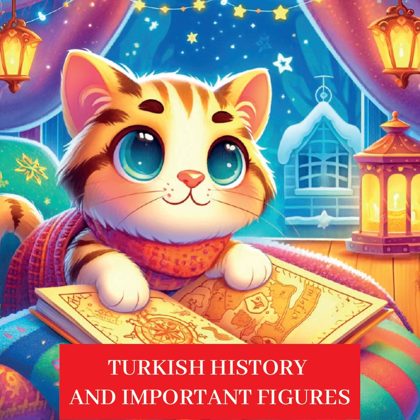
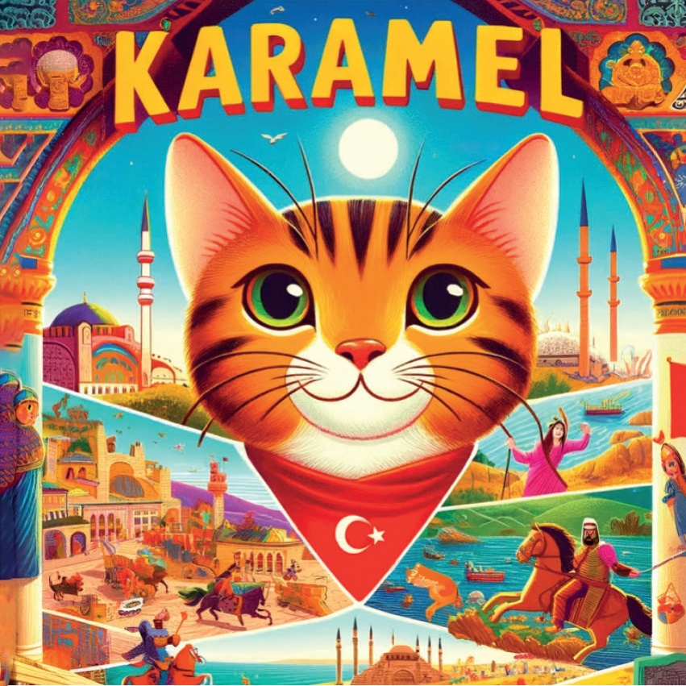
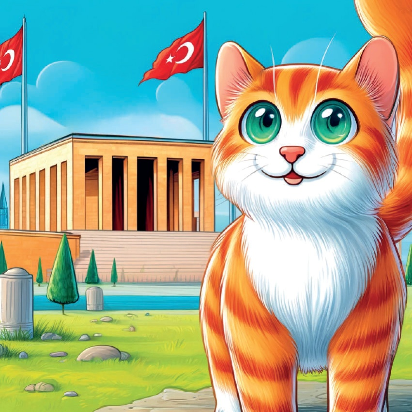
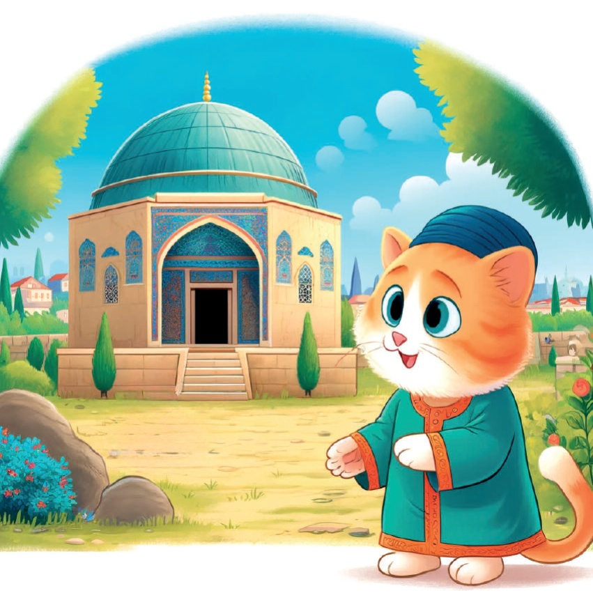
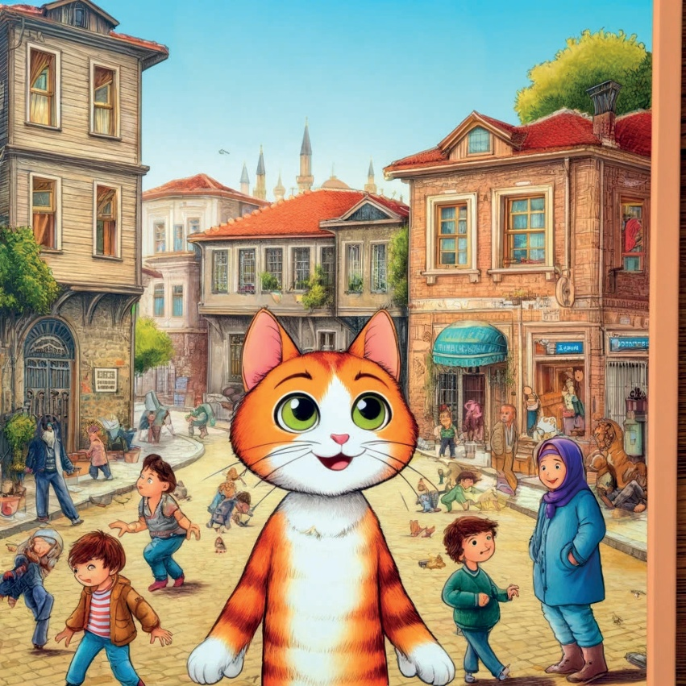
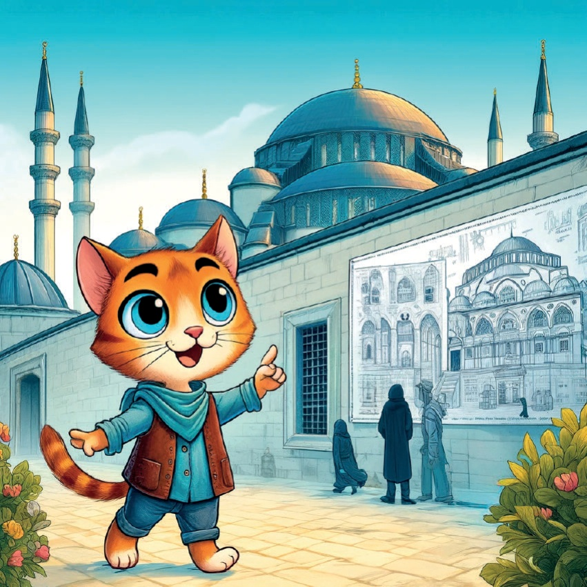
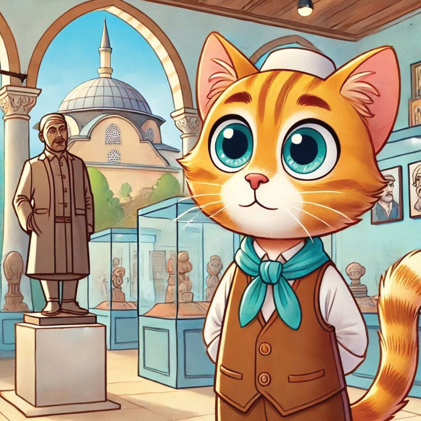
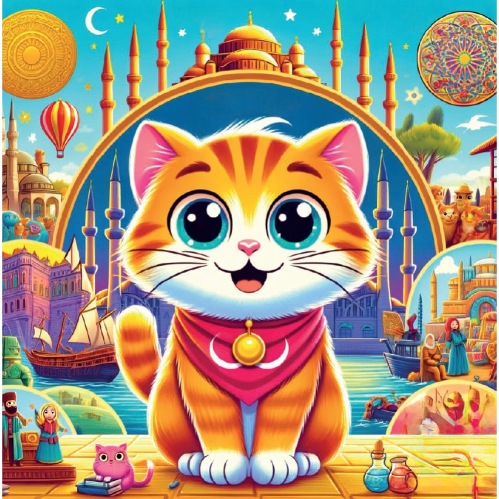
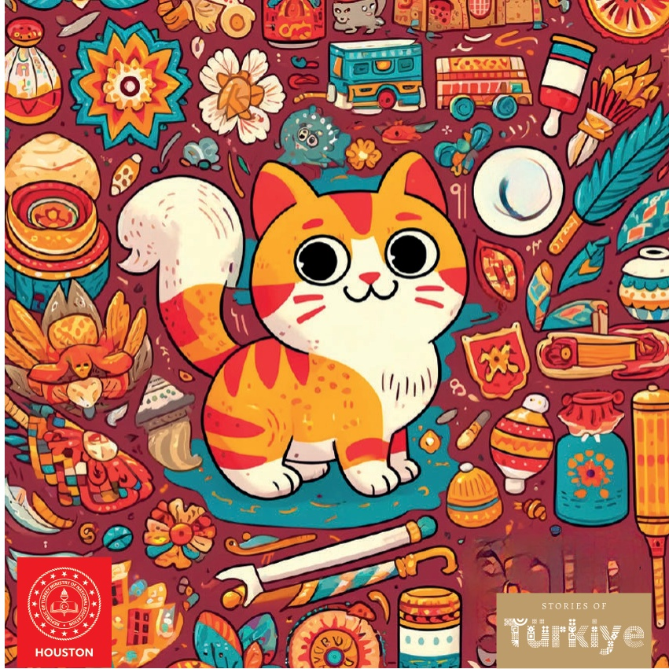

1

2

3
Într-o țară plină de istorie numită Türkiye, a trăit odată o pisică curioasă pe nume Karamel. Karamel adora să exploreze locuri noi și să învețe despre evenimente și figuri istorice importante. Într-o dimineață însorită, a găsit o hartă colorată care a dus-o în diverse orașe cunoscute pentru contribuțiile lor semnificative la istorie.
4

5
Mustafa Kemal Atatürk în Ankara
Prima oprire a lui Karamel a fost Ankara,
unde a aflat despre Mustafa Kemal Atatürk,
fondatorul modernității Turciei.
A vizitat Anıtkabir,
mormântul lui Atatürk,
și a aflat despre viziunea sa pentru țară.
6

7
Suleiman Magnificente în Istanbul
Apoi, Karamel a călătorit în Istanbul,
unde a aflat despre Suleiman Magnificente, unul dintre cei mai faimoși
sultani ai Imperiului Otoman.
A vizitat Moscheea Suleiman și a aflat despre contribuțiile sale la drept și cultură.
8
9
Călătoria lui Karamel a continuat spre Eskişehir,
unde a aflat despre Yunus Emre,
un poet și mistice sufi celebru.
A vizitat mormântul lui Yunus Emre și a fost
inspirată de mesajele sale de dragoste și unitate.
10

11
Halide Edib Adıvar în Istanbul
În Istanbul, Karamel a descoperit
povestea lui Halide Edib Adıvar,
o faimoasă romancieră și naționalistă turcă.
A vizitat locurile unde Halide Edib
a trăit și a scris operele sale influente.
12

13
Mimar Sinan în Edirne
Karamel a călătorit apoi la Edirne,
unde a admirat
minunile arhitecturale ale lui Mimar Sinan,
principalul arhitect al
Imperiului Otoman.
A fost uimită de frumusețea și complexitatea
Moscheii Selimiye.
14

15
Hacı Bektaş Veli în Nevşehir
Aventura lui Karamel a dus-o în Nevşehir,
unde a aflat despre Hacı Bektaş Veli,
un filosof și lider spiritual.
A vizitat Muzeul Hacı Bektaş Veli
și a aflat despre învățăturile sale
despre egalitate și umanism.
16

17
Rumi în Konya
Călătoria lui Karamel a continuat spre Konya,
unde a aflat despre Rumi,
poetul și misticele celebru.
A vizitat Muzeul Mevlana
și a fost încântată de poveștile
înțelepciunii și iubirii lui Rumi.
18
19
În sfârșit, Karamel s-a întors acasă,
simțindu-se îmbogățită de poveștile
și istoriile pe care le învățase.
Era plină de mândrie pentru moștenirea bogată a Turciei
și aștepta cu nerăbdare să-și împărtășească
aventurile cu prietenii ei.
20

21

22